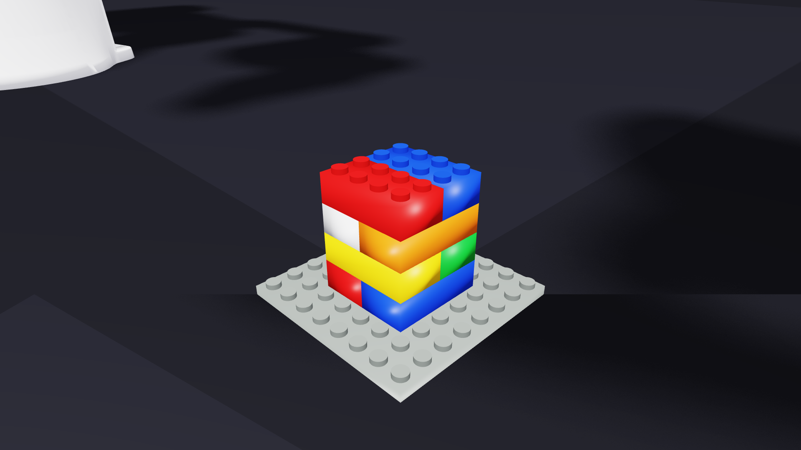
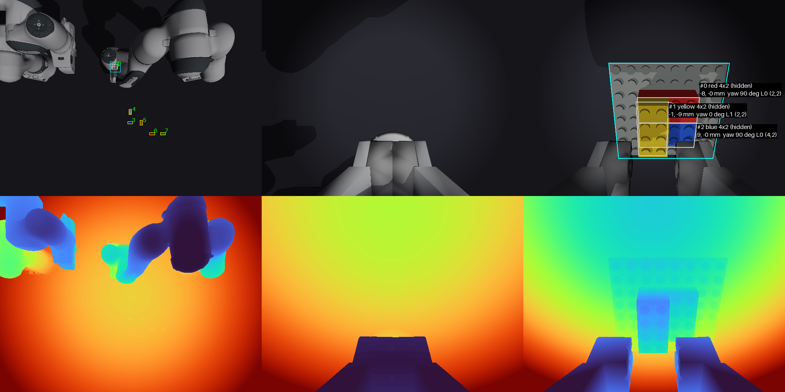

A dual-arm LEGO assembly cell in Newton, with a vision-only RL interface
bash setup.sh then ./run.sh --shape cube

Top, wrist_A and wrist_B cameras, RGB over depth (--show-cameras). The labels on wrist_B are top_detect's read-out: colour, size, offset, yaw, layer, plate cell.
Top and two wrist cameras, with sensor noise, exposure gain and a hidden extrinsic error redrawn per episode.
Reads each brick's colour, size and pose, the baseplate grid and the bricks held in a gripper off the top image.
Simulator state is used only for reward and scoring. A test checks that moving bricks behind the cameras' back leaves the observation unchanged.
Brace on or off, where to brace, and how hard to press. The bracing policy is learned here, not hand-planned.
Both hands at 10 Hz: position, yaw and grip deltas, shaped reward, ends when the brick snaps.
DirectRLEnv-style tensors in and out; adapters for rsl_rl, skrl and rl_games (train_rl.py).
Zero actions, images off, one development machine
BatchedReachEnv runs N cells in one Newton model with one captured CUDA graph per frame and per-world reset; about 28× a single env at N = 128.
Next: train the bracing policy. The plan's hand-planned brace breaks the arch at step 10 and S3 at step 13, while the same steps succeed unbraced.